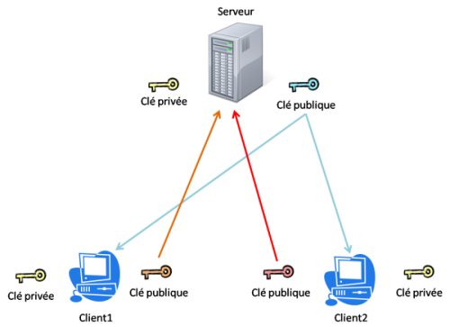
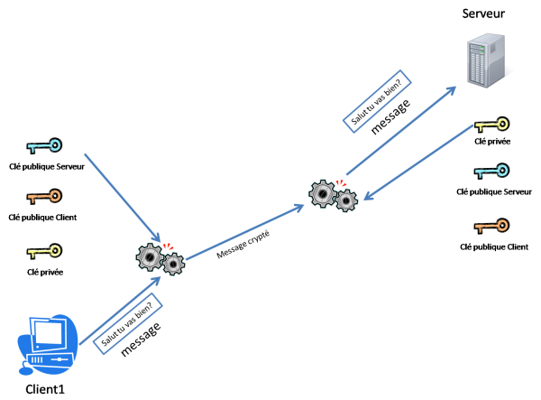
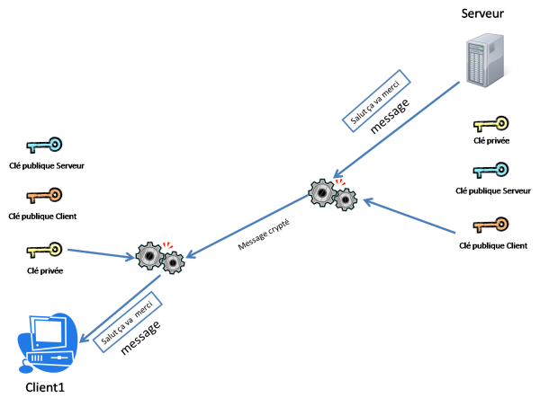
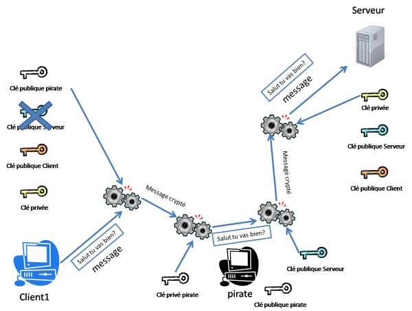
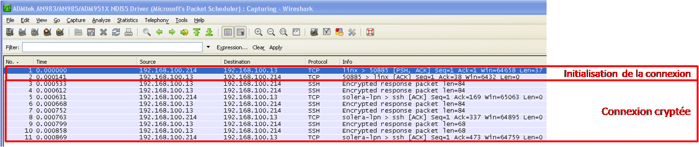

Bonjour à tous ! :) Aujourd'hui, toutes les applications de chat connues sont cryptées. C'est pourquoi j'ai cherché pendant de nombreuses heures comment crypter le système du chat issue de ce tutoriel. Sans cryptage, n'importe quelle personne avec un minimum de compétences informatiques est capable d'espionner vos conversations les plus intimes.
Je vous mets ici le résultat de mes recherches, je tiens à préciser que je suis débutant et qu'il peut y avoir des erreurs. :-°
J'ai choisi de me servir de Qt, en utilisant QSslSocket qui implémente le protocole SSL dans un QTcpSocket. Ceci n'est pas une solution exhaustive, il a de nombreuses façons de crypter une communication en C++.
SSL est un protocole de sécurisation des échanges sur internet. Il est notamment utilisé dans les sites en « https ». Il sert à la fois à crypter les données transmises et à vérifier l’identité des acteurs du dialogue (clients et serveur).
SSL utilise le principe de la cryptographie asymétrique. Il repose sur le principe d'une clé publique et d'une clé privée par acteur. La clé publique sert à crypter et la clé privée sert à décrypter. La clé privée doit absolument rester PRIVÉE, c'est pour cela qu'elle est généralement stockée dans un fichier crypté par une passphrase.
A l'établissement de la connexion, les différents acteurs s'échangent leurs clés publiques, on parle de transaction :

Ainsi le serveur possède la clé publique du client1 et du client2, le client1 et le client2 possèdent celle du serveur.
Lorsque le client1 va vouloir dialoguer avec le serveur (exemple : « Salut tu vas bien ? »), il va crypter le message avec la clé publique du serveur. Il n'y a que le serveur qui est capable de décrypter le message car il est le seul à posséder la clé privée.

L'échange serveur vers client se fera de la même façon :

Un problème de sécurité reste cependant présent :( Vous ne le voyez pas ? :-° Comment peut-on être sûr que l'on utilise la bonne clé publique pour crypter ? En effet un « méchant pirate » peut s'interposer entre le client et le serveur en injectant sa clé publique au client. Il sera donc capable de déchiffrer tout ce qui vient du client.

Pour résoudre ce problème de sécurité, on a crée des autorités de certification qui signent les clés publiques. Cette signature permet de certifier l'origine de la clé publique. Une clé publique signée s'appelle un certificat.
Cette page n'a pas pour but de vous former entièrement sur SSL, elle pose juste les bases nécessaires à la compréhension du reste du tutoriel. Pour plus d'informations, vous pouvez lire la bible du SSL en français.
Nous allons donc utiliser SSL pour crypter les connexions entre notre serveur de chat et les clients. Il faut donc générer des clés pour le serveur et tous les clients.
Pour obtenir plus d'information sur le cryptage, je vous invite à lire le tutoriel de L01c et Yruama.
Les clés privées et publiques ne se trouvent pas comme ça, il faut les générer !
Installation d'OpenSSL
J'ai choisi d'utiliser OpenSSL pour créer mes clés.
Installation pour Linux
Avec les sources : Vous devez télécharger l'archive la plus récente sur le site officiel, c'est à dire ici. Ensuite il vous suffit d'effectuer les commandes suivantes
./Configure linux-elf --prefix=/usr --openssldir=/usr/openssl
make
su
make install
exit
Pour Debian : Si vous utilisez Debian, l'installation est encore plus simple : Si vous utilisez Debian, l'installation est encore plus simple :
apt-get install openssl
Installation pour Windows
Pour installer OpenSSL pour Windows, il vous suffit de télécharger un des installateur suivant et de réaliser l'installation.
A la fin de l'installation l'exécutable openSSL.exe se trouve dans " C:\OpenSSL-Win32\bin\ " ou " C:\OpenSSL-Win64\bin\ "
Génération des clés
Nous allons tout d'abord générer la clé et le certificat de notre CA (autorité de certification), j'ai choisi de faire un certificat autosigné dans le cadre du tutoriel, pour une mise en production, il faudra prévoir l'achat d'un certificat trust et la création de clé minimum 1024 bits (man openssl :p je vais pas tout faire à votre place :D).
On génère la clé privée de notre autorité
Cette clé nous permettra de signer tous les certificat émis par notre CA ! L'option des3 permet d'ajouter une passphrase pour crypter notre clé.
openssl genrsa -des3 -out ca/ca.key
Résultat :
Generating RSA private key, 512 bit long modulus
...............++++++++++++
...............++++++++++++
e is 65537 (0x10001)
Enter pass phrase for ca.key:
Verifying - Enter pass phrase for ca.key:
Notez bien cette passphrase, elle vous sera utile pour tout le reste du tuto (voir de votre vie) si vous la perdez, il vous faudra tout recommencer ! :colere2:
On peut remarquer les informations sur l'algorithme de cryptage dans les en-têtes PEM de la clé privée cryptée.(Proc-Type: 4,ENCRYPTED DEK-Info: DES-EDE3-CBC,F1AB4765D89854CA). Cela vous permet de vérifier que votre clé a bien été cryptée, sans ces en-têtes, en lisant seulement la clé je suis incapable de vous dire si elle est cryptée ou non.
On crée le certificat autosigné
Le certificat est la clé publique de notre CA signé par… heu, notre CA. Je vous rappelle que pour que votre certificat soit trust, il faut normalement le faire signer par une autre CA reconnu, ce qui vous permet de créer une CA intermédiaire. Pour avoir plus de détails sur la mise en production, je vous conseille le site de TBS
Je vous laisse remplir les informations demandées tout seuls, vous êtes grands ! :D je ne vous fait pas l'affront de vous le traduire. :)
Country Name (2 letter code) [AU]:FR
State or Province Name (full name) [Some-State]:
Locality Name (eg, city) []:
Organization Name (eg, company) [Internet Widgits Pty Ltd]:
Organizational Unit Name (eg, section) []:
Common Name (eg, YOUR name) []:
Email Address []:
Si l'on veut crypter la clé on peut utiliser l'option -des3
openssl genrsa -out client-key.pem
Generating RSA private key, 512 bit long modulus
....................++++++++++++
...++++++++++++
e is 65537 (0x10001)
On obtient un fichier client-key.pem
On génère la demande de certificat
openssl req -new -key client-key.pem > client.csr
-----
Country Name (2 letter code) [AU]:FR
State or Province Name (full name) [Some-State]:
Locality Name (eg, city) []:
Organization Name (eg, company) [Internet Widgits Pty Ltd]:
Organizational Unit Name (eg, section) []:
Common Name (eg, YOUR name) []:
Email Address []:
Please enter the following 'extra' attributes
to be sent with your certificate request
A challenge password []:
An optional company name []:
Voila nous avons généré nos clés :) (le plus dur est derrière nous) ! Si vous avez plus d'un client il vous faudra générer une clé et un certificat pour chaque client.
Pour suivre cette partie, vous devez connaitre Qt. Si ce n'est pas le cas il faut commencer par là !
Qt, depuis sa version 4.3, permet d'utiliser des socket SSL via la classe QSslSocket, je vous invite à ouvrir la documentation en parallèle de ce tutoriel car c'est cette classe que nous allons utiliser ici.
J'ai choisi de ne pas vous mettre le code complet du serveur, juste les parties qui utilisent SSL, :( ne soyez pas tristes vous trouverez tous les éléments manquants ici.
J'ai choisi d'utiliser 3 classes :
FenServeur pour la fenêtre principale de mon serveur
#include "Serveur.h"
#include "ClientServeur.h"
Serveur::Serveur( QObject *parent ) :QTcpServer( parent )
{
}
//on surcharge la methode incomingConnection
//le but ici est de récupérer un QSslSocket au lieu d'un QTcpSocket
void Serveur::incomingConnection( int descriptionSocket )
{
ClientServeur *client =new ClientServeur( descriptionSocket, this );
connect(client, SIGNAL(sslError(const QString&)),this, SIGNAL(sslErreur(const QString&)) );
emit nouveauClient(client);
}
Cette classe est obligatoire, elle hérite de QTcpServer et surchage la méthode incomingConnection. Dans cette méthode j'instancie un ClientServeur qui hérite de QSslSocket.
#include "ClientServeur.h"
ClientServeur::ClientServeur( int descriptionSocket, QObject *parent )
: QSslSocket( parent )
{
connect( this, SIGNAL(disconnected()), SLOT(deleteLater()) );
connect( this, SIGNAL(sslErrors(QList<QSslError>)),
SLOT(sslErrors(QList<QSslError>)) );
if( !setSocketDescriptor( descriptionSocket ) )
{
return;
}
//on charge la clé privé
QFile file( "../../key/server-key.pem" );
if( ! file.open( QIODevice::ReadOnly ) )
{
qDebug() << "ouverture de la clé impossible" << "../../key/server-key.pem";
return;
}
QSslKey key( &file, QSsl::Rsa, QSsl::Pem, QSsl::PrivateKey, "mapassphrase" );
file.close();
setPrivateKey( key );
//on charge le certificat de la ca
if( ! addCaCertificates( "../../key/ca/ca.pem" ) )
{
qDebug() << "ouverture du certificat de la ca impossible" << "../../key/ca/ca.pem";
return;
}
//on charge le certificat du serveur
setLocalCertificate( "../../key/server-crt.pem" );
//j'enleve la vérification des clients, mon but ici est de crypter la connexion pas de vérifier l'identité des différents clients
setPeerVerifyMode(QSslSocket::VerifyNone);
//on ignore les erreurs ssl car on a un certificat autosigné qui est donc non sure, on a la possiblité de choisir les erreurs à ignorer en les passant en arguments à la méthode
ignoreSslErrors();
//on demarre le cryptage
startServerEncryption();
}
void ClientServeur::sslErreur( const QList<QSslError> &errors )
{
foreach( const QSslError &error, errors )
{
emit sslError(QString::number(error.error()));
}
}
Cette classe va charger la clé et le certificat de notre serveur, elle va aussi charger le certificat de notre CA. Ce certificat est utilisé si on active la vérification des peers dans SSL avec l'option setPeerVerifyMode. J'ai choisi ici de supprimer cette vérification pour rendre le tutoriel plus simple. N'oubliez pas de changer « mapassphrase » par votre passphrase (enregistrée lors de la génération des clés).
La classe FenServeur
Dans la classe FenServeur, il suffit juste d'instancier un Server et de connecter les signaux.
serveur = new Serveur(this);
if (!serveur->listen(QHostAddress::Any, 50885)) // Démarrage du serveur sur toutes les IP disponibles et sur le port 50585
{
// Si le serveur n'a pas été démarré correctement
etatServeur->setText(tr("Le serveur n'a pas pu être démarré. Raison :<br />") + serveur->errorString());
}
else
{
// Si le serveur a été démarré correctement
etatServeur->setText(tr("Le serveur a été démarré sur le port1 <strong>") + QString::number(serveur->serverPort()) + tr("</strong>.<br />Des clients peuvent maintenant se connecter."));
connect(serveur, SIGNAL(nouveauClient(ClientServeur*)), this, SLOT(nouvelleConnexion(ClientServeur*)));
connect(serveur, SIGNAL(sslErrors(const QString &)),this, SLOT(sslErreur(const QString &)) );
}
//on affiche les erreurs ssl
void FenServeur::sslErreur(const QString &erreur)
{
QMessageBox::warning(this,"erreur",erreur);
}
//on enregistre les nouveau client
void FenServeur::nouvelleConnexion(ClientServer* nouveauClient)
{
etatServeur->setText("client "+QString(nouveauClient->socketDescriptor()));
connect(nouveauClient, SIGNAL(readyRead()), this, SLOT(donneesRecues()));
connect(nouveauClient, SIGNAL(disconnected()), this, SLOT(deconnexionClient()));
}
//le serveur recoit des données
void FenServeur::donneesRecues()
{
MyClient *client=NULL;
// On détermine quel client envoie le message (recherche du QSslSocket du client)
//on cast le sender() pour obtenir le QSslSocket du client
QSslSocket *socket = qobject_cast<QSslSocket *>(sender());
if (socket == 0) // Si par hasard on n'a pas trouvé le client à l'origine du signal, on arrête la méthode
{
qDebug() << "pas de client à l'origine du signal";
return;
}
..... Traitement des données recues
}
Dans cette classe on connecte les signaux qui permettront de traiter les erreurs et la réception des données des clients.
Petite astuce :
Il est possible de récupérer les informations saisies lors de la création du certificat par exemple pour récupérer le CN :
J'ai choisi de ne pas vous mettre le code complet du client, juste les parties qui utilisent SSL, :( ne soyez pas triste vous trouverez tous les éléments manquants ici.
//on instancie un QSslSocket
socket = new QSslSocket(this);
//on connect les différents signaux
connect(socket, SIGNAL(encrypted()), this, SLOT(ready()));
connect(socket, SIGNAL(readyRead()), this, SLOT(donneesRecues()));
connect(socket, SIGNAL(connected()), this, SLOT(connecte()));
connect(socket, SIGNAL(disconnected()), this, SLOT(deconnecte()));
//on charge la clé privé du client
QFile file( "../../key/client-key.pem" );
if( ! file.open( QIODevice::ReadOnly ) )
{
qDebug() << "la clé du client ne peut pas être chargé" <<"../../key/client-key.pem";
return;
}
QSslKey key( &file, QSsl::Rsa, QSsl::Pem, QSsl::PrivateKey, "mapassphrase" );
file.close();
socket->setPrivateKey( key );
//on charge le certificat du client
socket-> setLocalCertificate( "../../key/client-crt.pem" );
//on charge le certificat de notre ca
if( ! addCaCertificates( "../../key/ca/ca.pem" ) )
{
qDebug() << "ouverture du certificat de la ca impossible" << "../../key/ca/ca.pem";
return;
}
//on supprime la vérification du serveur
socket->setPeerVerifyMode(QSslSocket::VerifyNone);
//on ignore les erreurs car on a un certificat auto signé
socket->ignoreSslErrors();
// On désactive les connexions précédentes s'il y en a
socket->abort();
//on se connecte au serveur
socket->connectToHostEncrypted(serveurIP->text(), serveurPort->value());
//on commence l'encryptage
socket->startClientEncryption();
Il faut attendre l'émission du signal encrypted pour pouvoir envoyer les données cryptées.
Cette classe instancie un QSslSocket et connecte les différents signaux aux slots de traitement. Pour que SSL fonctionne, il faut charger la clé, le certificat client et le certificat de notre CA. Une fois que tous les éléments sont chargés, on se connecte à notre serveur via connectToHostEncrypted. N'oubliez pas de changer « mapassphrase » par votre passphrase (enregistrée lors de la génération des clés).
Vu que je ne fais confiance qu'à ce que je vois :D et que la conversation entre mon client et mon serveur est super confidentielle, je préfère être sûr que mon cryptage fonctionne ;).
Pour débugger et vérifier que ce que j'ai programmé fonctionne, j'utilise souvent Wireshark. Il permet de capturer tous les paquets qui passent par ma carte réseau. Ainsi cela me permet d'avoir une vision réseau de mon application en fonctionnement. Le but ici est de vérifier que la communication entre mon client et mon serveur est bien cryptée.
Voici une vidéo qui vous explique comment utiliser Wireshark, malheureusement pour certains elle est en anglais.
Une fois que tout est fonctionnel, je tente une connexion de mon client.
Une fois le client connecté, j'envoie des données à mon serveur pour faire du dialogue réseau.
J'arrête la capture sur Wireshark et voila ce que cela me donne :
Le résultat du test

Les deux premières trames initialisent la connexion TCP, elles sont donc non cryptées. Une fois la connexion établie, on remarque que toutes les connexions sont cryptées ! ^^ On a donc atteint notre but et plus personne ne peut écouter nos conversations passionnantes sur le chat !
J'espère que cela aidera quelques personnes ;) Vous pouvez utiliser SSL avec tous les programmes qui ont besoin d'envoyer des informations sur le réseau, par exemple l'envoi de photos en mode crypté, un système de login-mot de passe sur un serveur, et vous pouvez même utiliser les certificats pour faire un login automatique d'un utilisateur.
Je suis ouvert à toute suggestion et amélioration, c'est comme cela que l'on devient meilleur :D